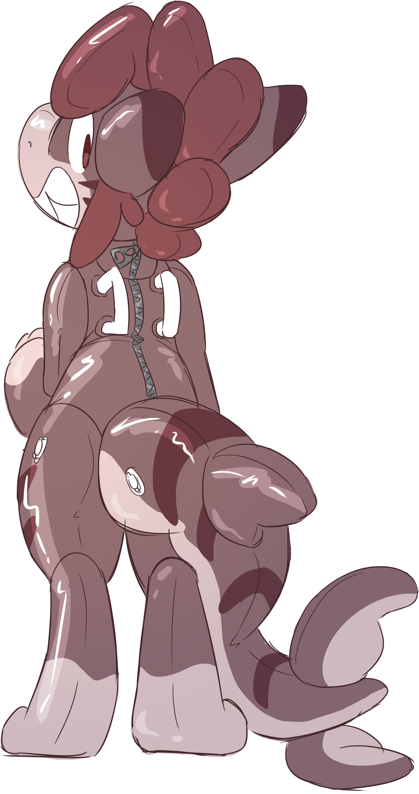
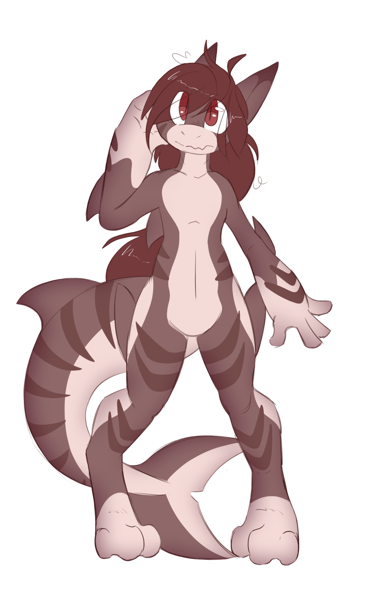

|
Welcome to my website! I'm Cocoa, a freelance artist who specializes in 2D and 3D art. If you would like to see some of my previous work, check out the Gallery tab, otherwise here's a little about this site. I created this website sort of as a tribute to the early 2000s internet which I grew up in. This site was entirely written by hand only using techniques that existed in the early 2000s. Actually I'm just too lazy to learn proper web dev so lets say that's the reason. Other than art and furry shenanigans I'm a Computer Science Major currently attending Missouri University of Science and Technology. I really don't know what else to put here xD |
Squeak! |
|
|
Something missing here  |
CocoaMilka was here :3 Random copyright stuff and bottom text.